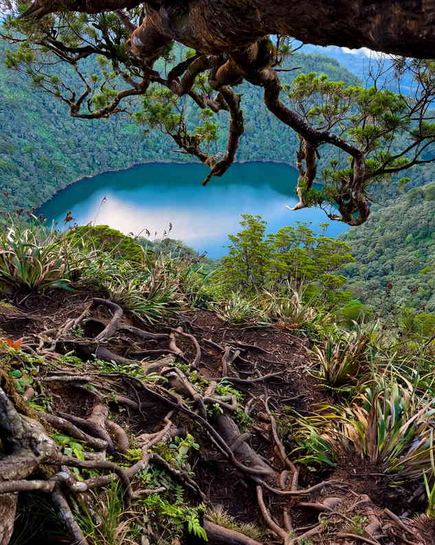

Mount Talinis is the dark, forested mountain behind Dumaguete, the one that catches the clouds most afternoons. Hikers know it by its old Spanish name too, Cuernos de Negros, the horns of Negros, after the twin summits seen from the coast. It is the highest point in Negros Oriental and one of the more demanding climbs in the Visayas, with crater lakes, sulfur vents and mossy forest packed into a two- or three-day route.
Before anything else, know this: from 1 November 2026, the town of Valencia has closed every trail to Mount Talinis within its borders. Mayor Edgar Teves Jr. signed Executive Order No. 45 on 26 October, citing damage to the mountain's ecosystem after years of growing climber numbers. The order sets no reopening date, and the police are enforcing it with the Valencia Tourism Office. That shuts the popular Apolong route, along with any other trail that starts on the Valencia side.
This guide explains what the closure means, which side of the mountain falls outside it, how the climb works when trails are open, and what to prepare if you still plan to go.

Is Mount Talinis Open Right Now?
On the Valencia side, no. This is the second time in roughly a year that the town has shut its trails. An earlier order, Executive Order No. 37 in October 2025, closed them for the same reason, and Valencia also kept the mountain off-limits for a long stretch after the pandemic began. The pattern is clear: the town treats Talinis as a park to protect first and a hiking destination second, and it is willing to close it when the forest needs a rest.
The order covers trails within Valencia. The Bediao trail starts in Dauin, the next town south, and is handled by the Dauin Tourism Office. Before booking anything, ask Dauin directly whether climbs are allowed, how far groups may go, and whether routes that pass into Valencia territory are affected. Do the same with any tour operator offering a Talinis package in the coming weeks. If the answer is unclear, wait.
Entering a closed trail, or slipping in through a back route, is a bad idea for more than legal reasons. Valencia already recognises only two official entry points, in Barangay Apolong and Barangay Puhagan, and rescues on this mountain are slow. Groups that use unrecognised paths have no guard post logging them in and no one expecting them back.
How the Mountain Is Laid Out
Talinis is a potentially active volcano in the Negros Volcanic Belt, though no eruption is on record. The summit, Nacolon Peak, sits close to 1,900 metres above sea level. Below it lies a cluster of lakes that most hikers remember more than the peak itself: Lake Nailig, right at the foot of the summit, where the main trails meet; Lake Yagumyum, further along the Dauin side; and the dried bed of Lake Halawig. The twin lakes of Balinsasayao and Danao belong to the same volcanic system, on the northern slopes, inside the Balinsasayao Twin Lakes Natural Park.
Lower down, the mountain feeds the Southern Negros geothermal field at Palinpinon, which explains the steaming sulfur vents at Kaipohan on the Apolong side and the hot springs scattered around Valencia.
The Main Trails
Apolong trail (Valencia)
This is the longer approach and, until now, the one most groups used. It begins at around 680 metres and climbs roughly 11 to 12 kilometres to the summit, past a boulder-filled lagoon, Twin Falls and the Kaipohan vents, to Rancho, a grassy plateau that serves as the usual first-night camp. From there it is an early-morning push to Lake Nailig and the peak. It is closed under the current order.
Bediao trail (Dauin)
Bediao starts higher, at about 800 metres, and covers roughly 7 to 8 kilometres to the summit. Shorter does not mean easier. It is steeper, with sections where you climb with your hands, and it crosses Nagbalagbag Ridge and passes Lake Yagumyum on the way. Some operators run it as a long day hike to the lake and ridge rather than a summit climb. Climbing parties on this side need a permit from the Dauin Tourism Office, pay a Dauin environmental fee and must hire accredited guides.
The traverse
When both sides are open, the classic route goes up Apolong and down Bediao, about 19 kilometres with more than 1,700 metres of total climbing over two or three days. That option depends entirely on Valencia reopening.
What the Climb Asks of You
Climbing groups rate Talinis as a major climb, around 6 on the usual 9-point difficulty scale. The trail is a mix of mud, rocks and roots, often all three at once, and the forest stays wet even in drier months. Fog rolls in fast, rain can arrive with little warning, and the summit area gets genuinely cold at night. There has been at least one hiker death on the mountain linked to exposure, which is why experienced guides insist on proper rain gear, a warm layer and more food than you think you need.
Water comes from the lakes and streams, so boil or treat it before drinking. Swimming in the lakes is not allowed for the same reason: they are the drinking supply for everyone camping above the treeline. Carry out every piece of trash, including food scraps. Mountain rules also ban hunting, dumping waste and moving boundary markers.
Guides are required, not optional, and porters are worth hiring if you are carrying camping gear for two nights. Rates, permit fees and environmental fees change, so get a written quote from the tourism office or your guide before the day. Day-hike tours on the Bediao side typically set a minimum age of 15, which is a fair indication of the effort involved.
If You Cannot Climb Talinis This Season
The closure is frustrating if you planned around it, but the mountain is not the only way to see this forest. The Balinsasayao Twin Lakes sit on the northern side of the same volcanic range, with paddle boats, short forest walks and a viewpoint over both lakes, and they make an easy half day from Dumaguete. If you want a real hike but less commitment, the list of beginner-friendly hikes in the Philippines has climbs you can do in a morning. And Valencia's waterfalls and hot springs, fed by the same mountain, are still there below the closed trails; see the places near Dumaguete worth the drive for ideas.
Plan for the Reopening
Talinis has closed and reopened before, and it will likely open again once the town is satisfied the forest has recovered. When it does, expect tighter limits rather than looser ones: Valencia already regulates entry by carrying capacity under a 2022 ordinance. Follow the Valencia Tourism Office for announcements, book guides early once dates are confirmed, and plan for two nights rather than one so you are not racing the weather off the mountain. A slower climb is safer, and it gives you time at the lakes, which is what most people come for in the first place.
Sources
Mt. Talinis trails in Valencia to close starting Nov. 1 – Digicast Negros, 27 October 2026
Valencia closes trails to Mt. Talinis in the town temporarily – GMA Regional TV, 15 October 2025
Valencia town tightens Mt. Talinis regulations – Digicast Negros, 25 March 2025
Mt. Talinis in NegOr still off-limits to trekkers – Philippine News Agency
Mt. Talinis (1,903+) Negros Oriental – Transit Pinas


Comments
No comments yet. Been here recently? Share a tip or ask a question.
Leave a Reply